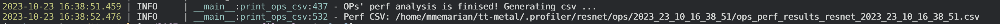
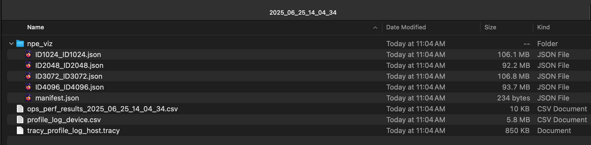
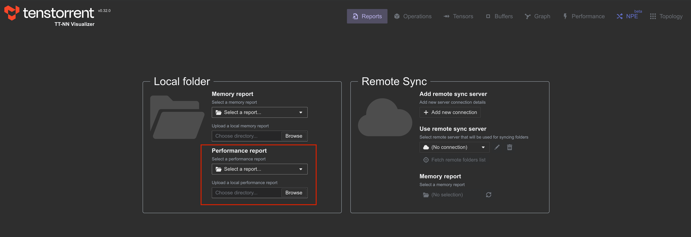
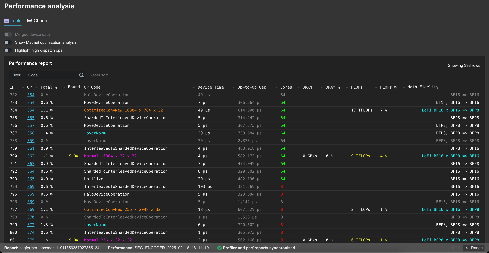
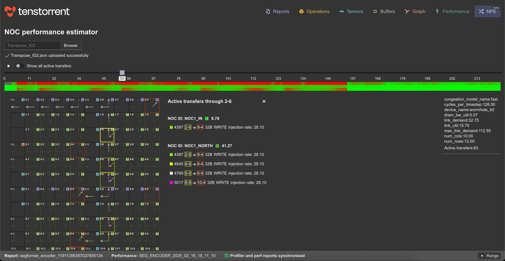

Profiling TT-NN Operations
The following set of commands will generate perf reports for bert_tiny as an example.
cd $TT_METAL_HOME
build_metal.sh
./tools/tracy/profile_this.py -n bert_tiny -c "pytest models/demos/wormhole/bert_tiny/demo/demo.py::test_demo"
After the commands finish, the location of the generated csv will be printed on console similar to the image below:

The -n option is used to give a shorter version of the test name to be appended to the CSV file name and be used as the folder name.
The profile_this.py script and its CLI options are explained under profile_this description.
The headers for the CSV are explained under Perf Report Headers.
Instructions on using the performance report with TT-NN Visualizer can be found in their documentation under Loading Data.
IMPORTANT NOTES:
If this is the first time you are running
profile_this.py, it requires developer dependencies to be installed.If you have done a reset on your GS device with
tt_smiortensix_reset.sh, profiling results are not valid due to tensix cores’ skewed timer starts. You need to perform a full reboot withsudo rebooton your host machine to align the timer starts. WH does not have this issue and profiling can be performed aftertt_smiresets.In order to populate program cache, tests should run their inference layer at least twice and should run it in the same process. If pytest is being used, that would be running in the same pytest run. Only the host times for the second run of the layer should be analyzed as the first run was populating the cache and will have much higher times for host side.
The first 1000 ops for each device is automatically collected by pytest fixtures at the end of your test. If your test has more than 1000 ops,
ttl.device.ReadDeviceProfiler(device)should be called at every n number of layers that total to less than 1000 ops in order to avoid dropping profiling data of new ops. For example for a model with around 120 ops for a single inference layer, if the test calls the layer more than 8 times,ttl.device.ReadDeviceProfiler(device)should be called at least every eighth layer run. If profiling data is dropped, you will receive warning messages in the execution log mentioning which RISC of what core of what device dropped profiling data. Note that dispatch cores fill up their profiling buffers faster and if only those cores are giving warnings your OP analysis is not affected.
Perf Report Headers
The OPs profiler report demonstrates the execution flow of the OPs in the pipeline. Each row in the CSV represents an OP executed.
For each OP, multiple data points are provided in the columns of the CSV.
The headers of the columns with their descriptions is below:
OP CODE: Operation name, for C++ level OPs this code is the name of the class for the OP
-
OP TYPE: Operation type, where the op ran and which part of code it is coming from
python_fallback: OP fully implemented in python and running on CPU
tt_dnn_cpu: OP implemented in C++ and running on CPU
tt_dnn_device: OP implemented in C++ and running on DEVICE
GLOBAL CALL COUNT: The index of the op in the execution pipeline
DEVICE ID: ID of the device the operation ran on
ATTRIBUTES: Operation attributes
-
MATH FIDELITY: Math fidelity of the fields
LoFi
HiFi2
HiFi3
HiFi4
CORE COUNT: The number of cores used on the device for this operation
PARALLELIZATION STRATEGY: How the device kernel parallelizes across device cores
HOST START TS: System clock time stamp stored at the very beginning of the OP execution
HOST END TS: System clock time stamp stored at the very end of the OP execution
HOST DURATION [ns]: Duration of the OP in nanoseconds, calculated as end_ts - start_ts
DEVICE FW START CYCLE: Tensix cycle count from the earliest RISC of the earliest core of the device that executed the OP kernel
DEVICE FW END CYCLE: Tensix cycle count from the latest RISC of the latest core of the device that executed the OP kernel
DEVICE FW DURATION [ns]: FW duration on the device for the OP, calculated as (last FW end cycle - first FW start cycle)/core_frequency with cycle markers chosen across all cores and all RISCs
DEVICE KERNEL DURATION [ns]: Kernel duration on the device for the OP, calculated as (last Kernel end cycle - first Kernel start cycle)/core_frequency with cycle markers chosen across all cores and all RISCs
DEVICE BRISC KERNEL DURATION [ns]: Kernel duration on the device for the OP, calculated as (last Kernel end cycle - first Kernel start cycle)/core_frequency with cycle markers chosen across BRISCs of all cores
DEVICE NCRISC KERNEL DURATION [ns]: Kernel duration on the device for the OP, calculated as (last Kernel end cycle - first Kernel start cycle)/core_frequency with cycle markers chosen across NCRISCs of all cores
DEVICE TRISC0 KERNEL DURATION [ns]: Kernel duration on the device for the OP, calculated as (last Kernel end cycle - first Kernel start cycle)/core_frequency with cycle markers chosen across TRISC0s of all cores
DEVICE TRISC1 KERNEL DURATION [ns]: Kernel duration on the device for the OP, calculated as (last Kernel end cycle - first Kernel start cycle)/core_frequency with cycle markers chosen across TRISC1s of all cores
DEVICE TRISC2 KERNEL DURATION [ns]: Kernel duration on the device for the OP, calculated as (last Kernel end cycle - first Kernel start cycle)/core_frequency with cycle markers chosen across TRISC2s of all cores
DEVICE COMPUTE CB WAIT FRONT [ns]: Total time spent on
cb_wait_fronton TRISC0, averaged across all coresDEVICE COMPUTE CB RESERVE BACK [ns]: Total time spent on
cb_reserve_backon TRISC2, averaged across all coresCOMPUTE KERNEL PATH: Path of the compute kernels in the program
COMPUTE KERNEL HASH: Kernel hash for compute kernel cache
DATAMOVEMENT KERNEL PATH: Path of the datamovement kernels in the program
DATAMOVEMENT KERNEL HASH: Kernel hash for datamovement kernel cache
-
Input & Output Tensor Headers: Header template is {Input/Output}_{IO Number}_{Field}. e.g. INPUT_0_MEMORY
-
- SHAPE
-
W: Tensor batch count
Z: Tensor channel count
Y: Tensor Height
X: Tensor Width
-
- LAYOUT:
-
ROW_MAJOR
TILE
CHANNELS_LAST
-
- DATA TYPE:
-
BFLOAT16
FLOAT32
UINT32
BFLOAT8_B
-
- MEMORY
-
dev_0_dram
dec_0_l1
host
-
Hardware Performance Counters
Tenstorrent devices contain hardware performance counters that measure cycle-level events inside each Tensix core. These counters provide visibility into compute utilization, memory traffic, instruction pipeline stalls, and NOC bandwidth that is not available from kernel-level timestamps alone.
Quick Start
To capture performance counters alongside profiling data, use the python -m tracy CLI with the --profiler-capture-perf-counters option:
python -m tracy --profiler-capture-perf-counters=fpu,pack,unpack,l1_0,instrn \
-m "pytest your_test.py -x -v"
Available counter groups:
fpu— compute utilization (FPU, SFPU, math counters)pack— packer activity (dest read, packer busy, scoreboard)unpack— unpacker activity, math pipeline stalls, source register writesl1_0— L1 memory ports 0-7 (unpacker, packer, TDMA, NOC Ring 0)l1_1— L1 memory ports 8-15 (extended unpacker, NOC Ring 1)instrn— per-thread instruction availability, stalls, and issue countsall— all of the above (recommended starting point)
Note: l1_0 and l1_1 share a hardware mux and cannot be captured simultaneously in a single python -m tracy run. To capture both, run them in separate passes. Automatic two-pass capture and merge is supported by the model-log wrapper (process_model_log.run_device_profiler).
Blackhole-only groups: l1_2, l1_3, l1_4 (additional NOC ring ports).
Output
The profiler generates the standard ops performance CSV at generated/profiler/reports/ops_perf_results.csv with additional columns for perf counter metrics. Console output also includes raw counter values and derived efficiency metrics with Min/Median/Max/Avg statistics across cores per operation.
Derived Metrics Reference
The following metrics are automatically computed from raw counters. Each metric appears in the CSV and console output with Min, Median, Max, and Avg aggregations across all cores for each operation.
Compute Utilization
SFPU Util (%): Fraction of cycles the SFPU was executing a valid operation. Higher is better for SFPU-heavy ops (e.g. sqrt, gelu).
FPU Util (%): Fraction of cycles the FPU was executing. Higher is better for FPU-heavy ops (e.g. matmul).
MATH Util (%): Fraction of cycles either FPU or SFPU was active (combined). Measures total math unit utilization.
Pipeline Efficiency
Packer Efficiency (%): Fraction of packer-busy cycles where dest data was available (
PACKER_DEST_READ_AVAILABLE / PACKER_BUSY). For workloads that don’t use the packer (PACKER_BUSY = 0), falls back to the dest-read grant rate (DEST_READ_GRANTED_0 / PACKER_DEST_READ_AVAILABLE). 100% means the packer never waited for data.Math-to-Pack Handoff Ratio (%): Ratio of math-availability cycles to packer-busy cycles (
AVAILABLE_MATH / PACKER_BUSY). Values >100% mean math produces output faster than packer consumes it; <100% means packer is the consumer bottleneck. Falls back toAVAILABLE_MATH / ref_cntwhen the packer isn’t used.Unpacker-to-Math Data Flow (%): Ratio of source register write availability to unpacker busy time. Higher means data flows smoothly from unpack to math.
Math Pipeline Utilization (%): Fraction of math-available cycles where the math instruction actually issued (
MATH_INSTRN_STARTED / MATH_INSTRN_AVAILABLE). 100% means every available math instruction issued immediately.FPU Execution Efficiency (%): FPU active cycles as fraction of math instruction availability on thread 1 (
FPU_COUNTER / FPU_INSTRN_AVAILABLE_1). Distinguishes compute-bound (high) from stall-bound (low) workloads.
Thread Analysis
Thread 0/1/2 Stall Rate (%): Fraction of cycles each thread was stalled. Thread 0 = unpack, Thread 1 = math, Thread 2 = pack. High values indicate the thread is waiting for a resource.
Pipeline Wait Metrics
SrcA/SrcB Valid Wait (%): Cycles waiting for source register data to become valid (data from unpacker not yet ready).
SrcA/SrcB Clear Wait (%): Cycles waiting for source register to be cleared (previous math operation still using it).
Math Idle Wait T1 (%): Cycles math thread waited for the math unit to become idle.
Pack Idle Wait T2 (%): Cycles pack thread waited for pack hardware.
Unpack Idle Wait T0 (%): Cycles unpack thread waited for unpack hardware.
Semaphore Waits
Semaphore Zero Wait T0/T1/T2 (%): Cycles each thread waited for a semaphore to become non-zero (waiting for producer).
Semaphore Full Wait T0/T1/T2 (%): Cycles each thread waited for a semaphore to become non-full (waiting for consumer).
TDMA Stall Metrics
Data Hazard Stall Rate (%): Fraction of math-valid cycles stalled by dest-to-src data hazards (MOVD2A/MOVD2B). Computed as
(MATH_INSTRN_AVAILABLE - DATA_HAZARD_STALLS_MOVD2A) / MATH_INSTRN_AVAILABLE.SrcA Write Port Blocked Rate (%): Fraction of srcA DMA write attempts blocked by port unavailability (DMA mux contention).
SrcB Write Port Blocked Rate (%): Same for srcB.
SrcA Write Overwrite Blocked Rate (%): Fraction of srcA write attempts blocked by overwrite protection — math hasn’t consumed the previous value yet. High values indicate math-consumer bottleneck.
SrcB Write Overwrite Blocked Rate (%): Same for srcB.
Dest Read Backpressure (%): Cycles where destination register read was requested but not granted.
Math Dest Write Port Stall Rate (%): Fraction of math-valid cycles stalled by destination register write port contention. Skipped when the underlying counter is 0 for an entire op (workload-dependent).
Math Scoreboard Stall Rate (%): Cycles where math was stalled by FPU data hazard scoreboard.
Instruction Availability
CFG/SYNC/THCON/MOVE Instrn Avail Rate T0 (%): Fraction of cycles each instruction type was available in thread 0’s instruction buffer. Shows which instruction types occupy the most scheduling time.
MATH Instrn Avail Rate T1 (%): Math instruction availability on the math thread.
UNPACK/PACK Instrn Avail Rate T0/T2 (%): Unpack and pack instruction availability on their primary threads.
Write Port Analysis
SrcA Write Actual Efficiency (%): Fraction of srcA write attempts not blocked by port contention (
SRCA_WRITE_ACTUAL / SRCA_WRITE_AVAILABLE). 100% = no port blocking.SrcB Write Actual Efficiency (%): Same for srcB (
SRCB_WRITE_NOT_BLOCKED_PORT / SRCB_WRITE_AVAILABLE).Unpacker0 Write Efficiency (%): Fraction of Unpacker 0 busy cycles where the srcA write succeeded (
SRCA_WRITE_ACTUAL / UNPACK0_BUSY_THREAD0).Unpacker1 Write Efficiency (%): Same for Unpacker 1 using srcB.
Unpacker Write Efficiency (%): Average of Unpacker0/1 Write Efficiency (per core, then aggregated).
L1 Memory Utilization
L1 Unpacker/Packer Port Util (%): Fraction of cycles the unpacker or packer L1 port had a transaction.
L1 TDMA Bundle Util (%): Average utilization of the two TDMA/RISC L1 ports.
NOC Ring 0/1 Outgoing/Incoming Util (%): Average utilization of NOC channels on each ring.
RISC Core L1 Util (%): RISC core L1 access utilization (Blackhole only, requires L1_1 group).
L1 Backpressure
NOC Ring 0/1 Outgoing/Incoming Backpressure (%): Fraction of NOC transaction cycles where L1 was not ready. Higher = more contention.
L1 Unpacker/Packer Port Backpressure (%): L1 port contention for unpacker and packer. On Blackhole, unpacker backpressure may be suppressed if the req/grant counter semantics differ (grant > req on some cores).
L1 Composite Metrics
L1 Total Bandwidth Util (%): Sum of all 8 L1 port request cycles divided by theoretical maximum (8 ports x ref_cnt). Shows overall L1 saturation.
L1 Read vs Write Ratio (%): Read port traffic as a fraction of total traffic. 50% = balanced, >50% = read-heavy.
NOC Ring 0 Asymmetry (%): Outgoing traffic as a fraction of total NOC Ring 0 traffic. 50% = balanced send/receive.
L1 Contention Index (%): Average backpressure across all active L1 ports. Single number summarizing L1 memory stress.
Unpacker L1 Efficiency (%): When the unpacker is busy, how often does L1 actually serve it.
Packer L1 Efficiency (%): When the packer is busy, how often does L1 serve it.
NOC vs Compute Balance (%): NOC cycles as a fraction of NOC + FPU cycles. >50% = NOC-bound, <50% = compute-bound.
TDMA vs NOC L1 Share (%): RISC/TDMA traffic as a fraction of all L1 traffic. Shows how much bandwidth goes to firmware vs NOC.
Fidelity Metrics
Fidelity Stall Rate (%): Fraction of math-valid cycles spent in a fidelity phase (multi-HF-cycle math instruction). 0% = pure LoFi; >0% = HiFi math is active.
HiFi Fraction (%): Fraction of issued math instructions that took more than 1 HF cycle (HiFi2 + HiFi4 over total).
Avg HF Cycles Per Instrn (raw number): Weighted average of HF cycles per issued math instruction. 1.0 = all LoFi, 2.0 = all HiFi2, 4.0 = all HiFi4.
Wormhole-Only Metrics
These metrics depend on per-pack-engine hardware signals that don’t exist on Blackhole (PACK_COUNT=1).
Packer Engine 0/1/2 Util (%): Per-engine packer utilization (WH has 4 packer engines; BH has 1 and uses the combined
PACKER_BUSY).Packer Load Imbalance (%): Spread between most and least utilized pack engines.
Additional Idle Waits
MMIO/SFPU/THCON/MOVE Idle Wait T0/T1 (%): Fraction of total cycles each thread spent waiting for specific hardware units.
Composite Metrics
Stall Overlap T0/T1/T2 (x): Ratio of sum of stall reasons to total stalls per thread. >1.0 means multiple stall conditions overlap.
Compute-to-Unpack Ratio (%): MATH_COUNTER / unpack busy. >100% = compute-bound, <100% = memory-bound.
T0/T1/T2 Instrn Issue Rate (raw number): Instructions issued per cycle per thread (
THREAD_INSTRUCTIONS_N / ref_cnt).
Architecture Differences
Wormhole and Blackhole expose different raw hardware signals:
PACK_COUNT=1on Blackhole ties the per-engine packer busy and dest-read signals for engines 1-3 to constants, so per-engine packer metrics (Packer Engine 0/1/2 Util, Packer Load Imbalance) are WH-only.Blackhole has additional L1 mux positions (3 extra for Tensix) providing deeper memory visibility through
l1_2,l1_3,l1_4counter groups.Packer EfficiencyandMath-to-Pack Handoff Ratiofall back to alternative formulas whenPACKER_BUSY = 0on a given op (e.g. pure-SFPU ops that don’t drive the packer).
For the authoritative per-architecture metric list, raw counter set, register maps, and signal definitions, see tech_reports/PerfCounters/perf-counters.md.
profile_this description
CLI options of the profile_this.py script are:
-c,--command: This is the required CLI option for providing the test command that has to be profiled-o,--output-folder: This option is for providing the output folder for storing the performance report folder created. The default output folder is${TT_METAL_HOME}/generated/profiler/reports-n,--name-append: Name to be appended to the the performance report folder and its files--collect-noc-traces: Specifying this option will also create timeline files using tt-npe in a subdirectory namednpe_vizunder the the perf report folder. These are used in the NPE tab on TT-NN Visualizer to visualize NoC traffic and congestion. Note: This option requires that npe is properly installed (See here for instructions).
This scripts performs the following items:
Executes the provided under test command to generate both host and device side profiling logs
Post-processes all the collected logs and aggregate them into the perf csv with a timestamped name (e.g.
ops_perf_results_2025_06_25_14_04_34.csv)
Using the Performance Report with TT-NN Visualizer
The perf report should be created under a folder with a timestamped name (e.g. 2025_06_25_14_04_34) and look like the following (the npe_viz subdirectory only exists if --collect-noc-traces is specified):

This folder can be uploaded under the Reports tab in TT-NN Visualizer:

The uploaded data can then be viewed in the Performance tab:

and NPE tab (if --collect-noc-traces was used):
